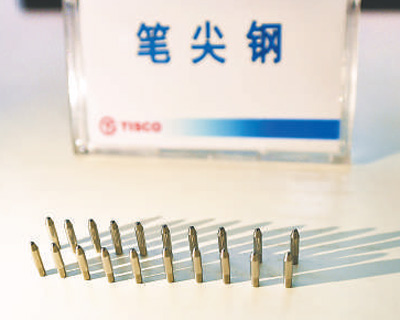
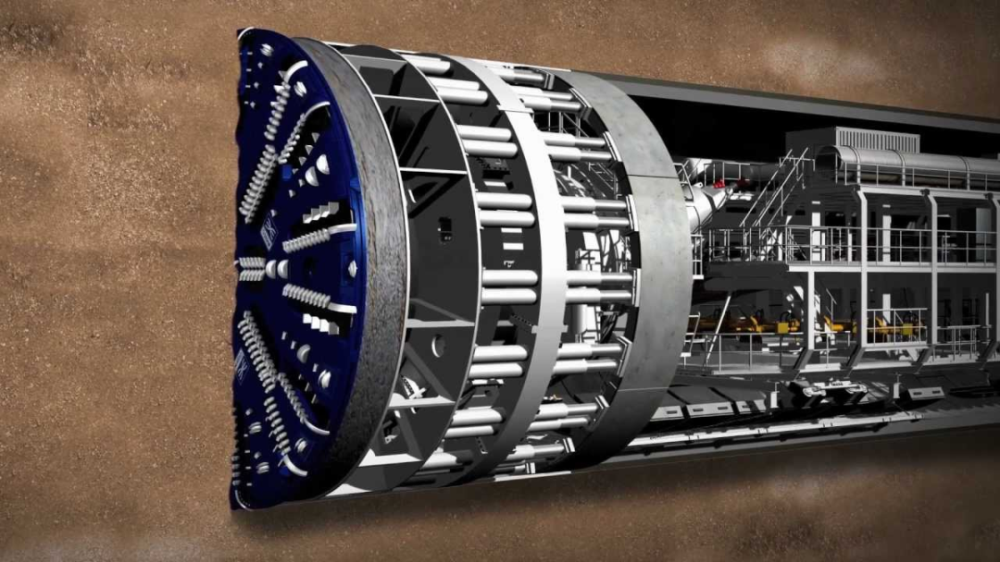

给定一定的资源，我们该生产盾构机还是笔尖钢？李嘉图两百年前说“cloth for wine”。现在的我们运用他的思想，我们可以说：“盾构机 for 笔尖钢”。
“中国是制造业大国，但是没有生产高精尖产品的能力，连圆珠笔尖上的钢珠都生产不出来，被外国‘卡脖子’。”
“中国从事的都是低端制造业，高端的东西都是外国在生产，中国根本没办法进入市场。”
在中国自己的笔尖钢被制造出来以前，此类言论甚嚣尘上。这些言论指向了一个听起来有些荒诞的事实：中国能造航母，造导弹，但是没法搞定一个小小的笔尖钢。
笔尖钢，被一些媒体称作是“不锈钢皇冠上的明珠”。圆珠笔头关键部位的尺寸精度要求在两个微米，表面粗糙度要求0.4微米，在笔头最顶端的地方，厚度仅有0.3到0.4毫米。进行如此高精度的加工，既要容易切削，加工时还不能开裂，对不锈钢原材料提出了极高的性能要求。
2016年以前的中国确实无法造出这样的钢材。为此，2016年1月，时任总理李克强在座谈会上透露到中国还不具备生产笔尖钢的能力。此后，关于中国制造业无法生产高端产品的讨论在网上愈演愈烈。
事已至此，对于中国的钢铁生产企业，尤其是国有钢铁生产企业来说，能不能炼出笔尖钢已经不是一个能否盈利的问题了，而变成了一个政治任务——我们必须生产笔尖钢，必须将圆珠笔头的生产国产化，才能证明中国是一个真正的制造业大国。 于是在2017年1月，太原钢铁宣布成功研发出笔尖钢，网上关于中国无法制造出笔尖钢、根本算不上制造业大国的言论终于不再此起彼伏。

图1 太原钢铁（集团）公司生产的笔尖钢
这反映了一个事实——大家对“比较优势”这一概念理解得不够深。
比较优势：不只是模型
比较优势思想的来源是英国古典政治经济学的代表之一大卫李嘉图。在他1817年完成的《政治经济学及赋税原理》一书中，他用一个堪称“神奇”的数值例子阐释了他的比较优势思想。在这里我们不妨来回顾一下这个例子：
假设世界上有两个国家，英国和葡萄牙。他们只需要生产两种商品：葡萄酒和衣服。在不进行贸易时，英国共有220个劳动者，其中120劳动者在生产葡萄酒，另外100个劳动者在生产衣服；葡萄牙共有170个劳动者，其中80个劳动者在生产葡萄酒，90个劳动者在生产衣服，且这两个国家的产出数量完全相同。这样看的话，似乎葡萄牙的劳动者在生产葡萄酒和衣服方面都更有优势，如果开放贸易的话，为了不浪费他们卓越的生产能力，似乎葡萄牙应该同时生产葡萄酒和衣服。
但李嘉图发现事实并非如此。试想，葡萄牙让90个生产衣服的劳动者去生产葡萄酒，英国让120个生产葡萄酒的劳动者去生产衣服，那么葡萄牙生产出的葡萄酒将是原来的（90+80）/80=2.125倍，英国生产的衣服将是原来的（120+110）/110=2.09倍。如果葡萄牙用一倍的葡萄酒和一倍的衣服与对方交换，最终他们的情况都比原来要好，因为葡萄牙相比原来多了0.125倍的葡萄酒，英国相比原来多了0.09倍的衣服。这是因为葡萄牙虽然在两种商品的生产上都有绝对优势，但他只在葡萄酒的生产上有比较优势，英国在衣服的生产上有比较优势。
图2 Cloth for wine(由ChatGPT生成)
李嘉图可能认为，在教学上使用一个两个国家、两个产品、数值化的高度简化的例子是有好处的。确实和他想的一样，这个数值例子几乎成为了所有经济学专业学生在学到比较优势思想的时候都会接触到的例子。而当一个外行人试图去了解比较优势时，各式各样的介绍性文章多半也会将这个数值例子或者类似的例子作为引入。 这个数值例子很简单，但是正如克鲁格曼在1996年的一篇文章中所写的一样，“比较优势”是“一个比看上去更难的概念”，这个简单的数值例子使得大众对比较优势的理解浅显了，从而不能真正理解比较优势的真正内涵。
具体而言，是大众在了解比较优势概念时，存在“错把模型当理论”的问题。这个数值例子是一个具体的比较优势模型，但是一般性的比较优势概念和这个具体的比较优势模型是不等同的。大众将李嘉图提出来的这个具体的比较优势模型与比较优势概念联系得过于紧密，以至于当外行人不深究细节时，这二者几乎就等同了，更深层的、一般的比较优势概念被掩盖。从而当他们面对生活中各种各样的具体的、远比两国两商品情境复杂的现实世界问题时，即使他们听说过比较优势，也无法运用比较优势的思想去分析。
那么比较优势概念的真正内涵是什么呢？其实是决策者选择不同方案的机会成本高低。比如以上面的简单模型为例，对葡萄牙来说，生产一件衣服就要放弃生产一定量葡萄酒的潜在收益。对英国来说也是如此，但是英国虽然做衣服不如葡萄牙，但他们做葡萄酒更不如葡萄牙，他们制作一件衣服放弃生产的葡萄酒的量更少。这就是说，英国生产衣服的机会成本相对葡萄牙更少，因此让英国去生产衣服，让葡萄牙最大化其生产葡萄酒的能力是更有效率的。
李嘉图会怎么看笔尖钢？
让我们回到笔尖钢的例子里，设想，如果李嘉图生在当代的中国，他会怎么看中国在很长一段时间里连笔尖钢都生产不出来呢？
我相信，他会以一个比网友更加宽容的态度来看待这件事。因为以比较优势的视角看，中国在生产笔尖钢上并不具有比较优势。不具有比较优势并不是说中国无法生产笔尖钢或者说生产笔尖钢的效率比不上其他国家。中国甚至有可能在生产笔尖钢上有绝对优势，但是在炼钢行业中，中国在其他方面的绝对优势更大，以至于生产笔尖钢是一个并不那么经济的行为。
正如中国制笔协会名誉副理事长陈三元在2017年的一次采访中说道：“相对于钢铁产业，制笔是个体量很小的行业。比如，一家钢铁厂一天的产量，可能就够制笔行业消化一年。”对于钢铁厂来说，专门为笔尖钢生产做研发、建立生产线所花费的成本足以让他们生产很多一般钢材了。这样看中国生产笔尖钢的机会成本其实是很大的。而对于其他钢铁产业并不如中国发达的国家来说，生产笔尖钢的机会成本并没有那么大。更具体地说，中国如果将研发、生产笔尖钢所花费的成本节省下来转而投入正常的钢材生产，将钢材出口至国外，换得笔尖钢的数量很可能是比自己生产的数量多得多的。
技术进步与比较优势
单从笔尖钢这个事例来看，比较优势似乎与技术的研发创新是存在一定矛盾的。但其实并非如此，在这里我们不妨来看看另一个关于盾构机的案例。
盾构机是一种使用盾构法挖掘隧道的工具，可以大幅提升隧道挖掘的效率。我国作为基建大国，对盾构机这类的施工机械的需求量很大。但是在21世纪以前，盾构机的整机制造技术长期被德国、日本等国垄断，我国常常需要以很高的价格从他国进口盾构机。1997年在修建秦岭隧道时，从国外进口一台盾构机需要7亿元，且在使用方面有诸多限制。而后我国下定决心自主研发盾构机，在2008年4月，成功研制出我国首台拥有自主知识产权的复合式土压平衡盾构。此后中国使用普通盾构机价格只需要2500万一台，复杂盾构机5000万元左右，大大降低了挖掘隧道的成本。

图3 盾构机构造示意图
盾构机的创新就是符合比较优势的技术创新，在这里这种比较优势是“动态”的。在中国可以自主生产盾构机之前，基于中国的要素禀赋结构，可以预见的是如果中国生产盾构机，相比于其他国家中国是具有比较优势的。这种由当前市场价格过高驱动的、符合比较优势的技术创新是最有效率的。
比较优势概念不是万能的
特朗普第二任期以来，频繁加征关税。截止4月11日，美国对华关税已经达到了离谱的145%。此举必然会进一步降低美国进口中国商品的数量，提高美国国内商品的价格。比较优势概念并不能解释这一点。
根据比较优势原理，中国相比美国有更低廉的劳动力，在生产手机、电脑、玩具等商品时更机会成本更低。相比之下，若美国选择自己去制造这些商品，所花费的成本会远高于从中国进口这些商品，商品的价格也将大幅攀升。整体而言，美国毫无疑问会受损。
那么，特朗普为什么违反比较优势原理去加征关税呢？一个很重要的原因是，美国国家内部的利益并不统一。
回看李嘉图的例子，不管是英国还是葡萄牙，都只有一种生产要素——劳动力。劳动力本身在国家内部也并无区分，生产葡萄酒的工人同时也会生产衣服。
但在现实生活中，会生产手机的工人未必懂得生产药品，拥有土地的地主也不能立刻转行去开电子厂——这就是问题的关键，当中国的低价制造业产品进入美国时，生产这些低价制造业产品的工人失业了，并且他们并不能很顺畅地转行去做其他事情，尽管从事其他工作的人都受益了。
也就是说，对美国而言，按照比较优势进行分工，总体而言会使得美国受益，但却让美国的产业工人受损了，这部分受损的产业工人就构成了特朗普加征关税的民意基础。即使这么高的关税严重违反了比较优势原理，依然可以在美国得到很多支持。
结语
新中国成立以来，我们一直在为中国制造业的每一个进步而欢欣鼓舞。195年第一辆解放卡车下线，1970年“东方红一号”卫星发射成功，2007年“和谐号”高速列车投入运营，2013年国产大飞机C919首飞……每一次中国制造业的进步带来的都是人们观念上的革新——我们可以造卡车了、可以造卫星了、可以造飞机了等等。中国制造在这些“大物件”上的飞速进步让大众对我国在“小物件”上的进口感到不可思议，甚至会损害大众对中国制造的信心。
过去我们的制造业水平比较低，比如说量化为3，那我们将会生产制造业水平为1、2和3的产品；现在我们的制造业水平高了很多，比如说量化为10，惯性思维使得大众认为我们应该生产所有水平为1-10的产品，如果发现中国暂时不能生产某个水平为5的产品就感到非常不能接受。但李嘉图告诉我们，大可不必如此，我们把生产5的资源用于生产更多的10，其实能获得更多。
特朗普的关税提醒我们：比较优势的概念不是万能的。现实里有太多因素使得国家之间不按照比较优势进行分工，导致双方均受损。但是，比较优势概念依然提供了一个很好的分析起点，我们起码可以通过比较优势概念知道在特朗普加税的过程中，谁受益了，谁受损了，以及总体而言，受益还是受损。
给定一定的资源，我们该生产盾构机还是笔尖钢？李嘉图两百年前说“cloth for wine”。现在的我们运用他的思想，我们可以说：“盾构机 for 笔尖钢”。